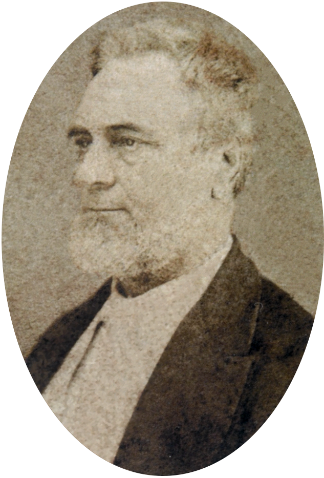
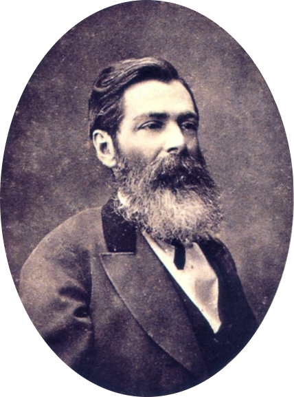
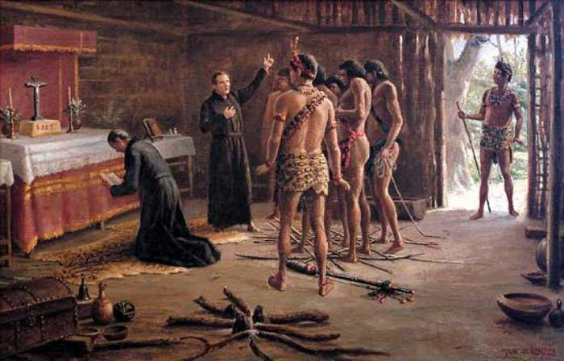

Prosa
Quando falamos em prosa, estamos falando de uma extrutura textual, sendo escrida com uma organização de parágrafos e a sua inteção ( de grosso modo), sendo a exposição de uma ideia, exposição de fatos ou uma hitória.
Alguns exemplos de prosa são:
- Contos de Fadas
- Livros de ficção ou não ficção
- Cartas
- Jornais
- E-mails
Prosa no Brasil
A prosa teve seu inicio no séc XIX no período do Romantismo, e sua divisão é a partir de suas temáticas, sendo elas:
- Indianista
- Hitórica
- Regionalista
- Urbana
Teve inicio nas publicações de prosa através de folhetins ( jornais diários ) com "A Moreninha" (1844) de Joaquim Manoel de Macedo, sendo publicada capitulo por capitulo a cada folhetim 
O principal escritor de Prosa foi José de Alencar, tendo participado de todas as divizões temáticas. 
Teatro
O teatro tem-se o nome de origem Grega ( theatron ), que significa Lugar para ver, e ( Theaomai ), Olhar com atenção, perceber, contemplar.
Sua Origem remonta aos primitivos onde se havia a cultura das pinturas rupestres, onde muitas registravam o grupo reunido e alguém aparentemente contando uma históra. Porem o teatro foi popularizado na Grécia no séc IV a.C . Geralmente com a temática de representação de seus Deuses
Este é um local teatral na grécia. Uma das definições de teatro é a Apresentação e o Público ( sem público não há teatro, apenas ensaio).
No Brasil o Teatro veio junto com a colonização Portuguêsa, onde os padres catequizavam e ensinavam a lingua portuguesa.